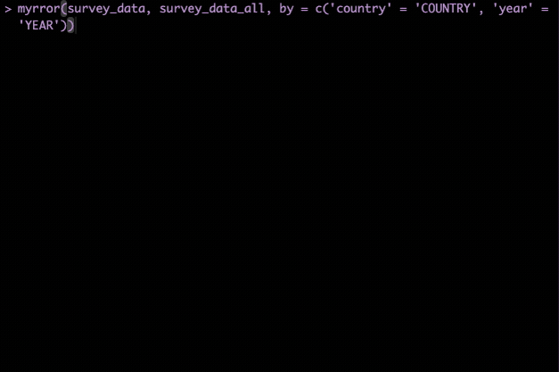
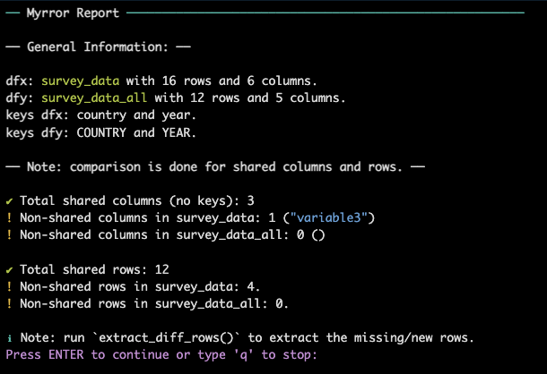
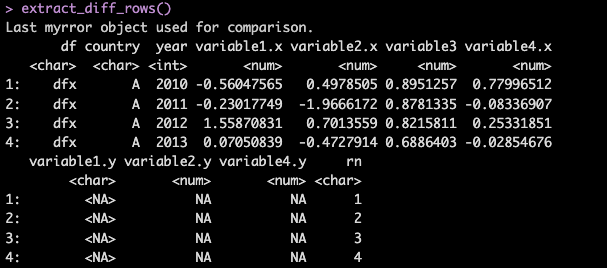
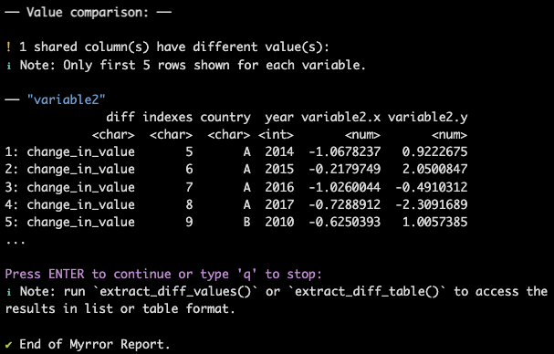
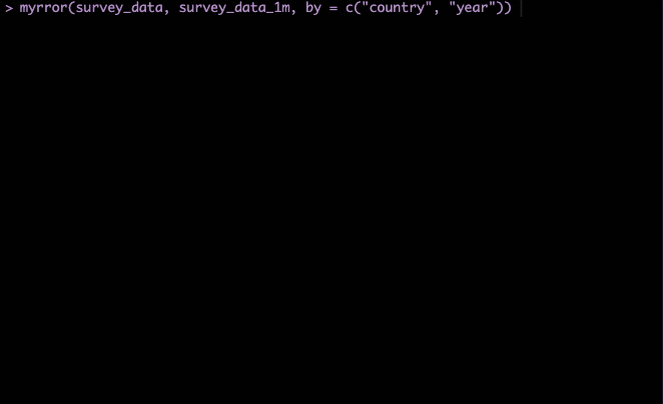

myrror(survey_data, survey_data_all,
by=c('country' = 'COUNTRY', 'year' = 'YEAR'),
interactive = TRUE) # note that interactive = TRUE is default{myrror}, a diagnostic tool for dataset comparison
Are these two dataframes the same?
Does every row have the same values for each variable?
Are there missing values or new ones?
If you’ve ever found yourself manually sifting through rows and columns to find differences between two almost identical data sets, you’ll appreciate the capabilities of {myrror}.
Indeed, dataset comparisons in R can often be challenging, especially when dealing with large datasets or subtle discrepancies. Developed to address common pain points in dataset comparison, {myrror} offers a structured, user-friendly approach to identify discrepancies in values, data types, and observations.
Why {myrror}?
In data science, ensuring two datasets are the same is a critical task across various scenarios. Whether you’re validating data integrity after an ETL process, checking for consistency during system migrations, or verifying the results of data synchronization, precise comparisons are essential. For instance, when moving data between systems or performing updates, even small discrepancies can lead to errors, missing records, or inconsistencies. Similarly, in software testing, comparing datasets ensures that code changes haven’t inadvertently altered the data output.
Tools like datatable::all.equal() or waldo::compare() offer effective solutions for identifying differences between datasets, and they work well for many straightforward cases. However, they can sometimes fall short when there are multiple, complex discrepancies, making it difficult to clearly understand which issues need to be corrected. Additionally, their outputs are primarily designed for console use and are often stored as S3 objects, which limits their integration into automated ETL processes.
This is where {myrror} comes in, offering:
Clear, User-Friendly Diagnostics: the user can easily interpret discrepancies with structured, detailed outputs that make it simple to understand what’s different between datasets and where corrections are needed.
Modular Design: the user can customize your comparisons by choosing which aspects to include, giving you control over how thorough or specific the analysis should be.
Flexible Configuration: Toggle between interactive and static modes, and adjust output types, allowing you to seamlessly integrate diagnostic checks into your data workflow.
Getting started
To demonstrate {myrror}’s capabilities, let’s start by comparing two datasets: survey_data and survey_data_all. These datasets are mostly identical, but survey_data_all has intentional differences, including value mismatches, type changes, keys with different names, and missing rows. We first run the main function mirror() in interactive mode:
Notice that the user needs to supply the keys that uniquely identify each row of the data. With interactive mode enabled, mirror() presents a visual report that guides you through the comparison:

How to read the results
When you run myrror(), the first thing you’ll get a “Myrror Report”.
There are three parts to the report:
1. General Information

Shared Columns: shows how many columns are shared between the two datasets, excluding the keys used for alignment, provides the names of the missing columns. These are the columns which will be compared in terms of values.
Shared Rows: counts the missing rows in both datasets. If there are missing rows,
myrror()will print a Note suggesting the user to runextract_diff_rows():
extract_diff_rows()
4. Detailed Value Comparison

The fourth part of the report shows a detailed comparison of the values for each shared column. As the note highlights, the auxiliary functions extract_diff_values()/extract_diff_table() can be used to access this part of the report separately.
Non-Identified Datasets and Row Alignment
Not all datasets are uniquely identified, and sometimes the user may need to compare datasets without knowing the keys altogether. In these cases, myrror() can help the user with the initial diagnosis thanks to a step-by-step series of warnings and suggestions:
myrror(survey_data, survey_data_1m, by = c("country", "year")) 
The user can then proceed either by manually identifying possible keys and re-attempting the comparison or by forcing row alignment using functions such as datatable::all.equal()/waldo::compare().
Conclusion
(To finish once we have CRAN release) Whether you’re a data scientist, analyst, or simply someone who works with data regularly, myrror aims to simplify and streamline your data comparison tasks. Give it a try, and let us know what you think. Download myrror from … etc.